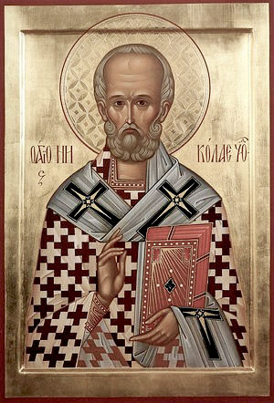

Возбра́нный Чудотво́рче и изря́дный уго́дниче Христо́в, ми́ру всему́ источа́яй многоце́нное ми́лости ми́ро и неисчерпа́емое чуде́с мо́ре, восхваля́ю тя любо́вию, святи́телю Нико́лае; ты же, я́ко име́яй дерзнове́ние ко Го́споду, от вся́ких мя бед свободи́, да зову́ ти:
Ра́дуйся, Нико́лае, вели́кий Чудотво́рче.
А́нгела о́бразом, земна́го су́ща естество́м, яви́ тебе́ всея́ тва́ри Созда́тель: благопло́дную бо добро́ту души́ твоея́ прови́дев, преблаже́нне Нико́лае, научи́ всех вопи́ти тебе́ си́це:
Ра́дуйся, от утро́бы ма́терния очище́нный; ра́дуйся, да́же до конца́ освяще́нный.
Ра́дуйся, рожде́нием свои́м роди́телей удиви́вый; ра́дуйся, си́лу душе́вную а́бие по рождестве́ яви́вый.
Ра́дуйся, са́де земли́ обетова́ния; ра́дуйся, цве́те Боже́ственнаго сажде́ния.
Ра́дуйся, лозо́ доброде́тельная виногра́да Христо́ва; ра́дуйся, дре́во чудото́чное рая́ Иису́сова.
Ра́дуйся, кри́не ра́йскаго прозябе́ния; ра́дуйся, ми́ро Христо́ва благоуха́ния.
Ра́дуйся, я́ко тобо́ю отго́нится рыда́ние; ра́дуйся, я́ко тобо́ю прино́сится ра́дование.
Ра́дуйся, Нико́лае, вели́кий Чудотво́рче.
Ви́дяще твои́х мир излия́ние, Богому́дре, просвеща́емся душа́ми и телесы́, ди́внаго тя мирото́чца живоно́сна, Нико́лае, разуме́юще: чудесы́ бо, я́ко вода́ми, благода́тию Бо́жиею излива́ющимися, напая́еши ве́рно вопию́щих Бо́гу: Аллилу́иа.
Ра́зум неуразуме́нный вразумля́я о Святе́й Тро́ице, был еси́ в Нике́и со святы́ми отцы́ побо́рник испове́дания правосла́вныя ве́ры: ра́вна бо Отцу́ Сы́на испове́дал еси́, соприсносу́щна и сопресто́льна, А́рия же безу́мнаго обличи́л еси́. Сего́ ра́ди ве́рнии научи́шася воспева́ти тебе́:
Ра́дуйся, вели́кий благоче́стия сто́лпе; ра́дуйся, ве́рных прибе́жища гра́де.
Ра́дуйся, тве́рдое Правосла́вия укрепле́ние; ра́дуйся, честно́е Пресвяты́я Тро́ицы носи́ло и похвале́ние.
Ра́дуйся, Отцу́ равноче́стна Сы́на пропове́давый; ра́дуйся, А́рия возбеси́вшагося от Собо́ра святы́х отгна́вый.
Ра́дуйся, о́тче, отце́в сла́вная красото́; ра́дуйся, всех богому́дрых прему́драя добро́то.
Ра́дуйся, о́гненная словеса́ испуща́яй; ра́дуйся, до́бре ста́до свое́ наставля́яй.
Ра́дуйся, я́ко тобо́ю ве́ра утвержда́ется; ра́дуйся, я́ко тобо́ю е́ресь низлага́ется.
Ра́дуйся, Нико́лае, вели́кий Чудотво́рче.
Си́лою, да́нною ти свы́ше, слезу́ вся́ку отъя́л еси́ от лица́ лю́те стра́ждущих, богоно́сне о́тче Нико́лае: а́лчущим бо яви́лся еси́ корми́тель, в пучи́не морсте́й су́щим изря́дный прави́тель, неду́гующим исцеле́ние и всем всяк помо́щник показа́лся еси́, вопию́щим Бо́гу: Аллилу́иа.
Име́яше вои́стину, о́тче Нико́лае, с Небесе́ песнь тебе́ воспева́ема быти, а не от земли́: ка́ко бо кто от челове́к возмо́жет твоея́ святы́ни вели́чия пропове́дати? Но мы, любо́вию твое́ю побежда́еми, вопие́м ти си́це:
Ра́дуйся, о́бразе а́гнцев и па́стырей; ра́дуйся, свято́е очисти́лище нра́вов.
Ра́дуйся, доброде́телей вели́ких вмести́лище; ра́дуйся, святы́ни чи́стое и честно́е жили́ще.
Ра́дуйся, свети́льниче всесве́тлый и вселюби́мый; ра́дуйся, све́те златоза́рный и непоро́чный.
Ра́дуйся, досто́йный А́нгелов собесе́дниче; ра́дуйся, до́брый челове́ков наста́вниче.
Ра́дуйся, пра́вило ве́ры благочести́выя; ра́дуйся, о́бразе кро́тости духо́вныя.
Ра́дуйся, я́ко тобо́ю от страсте́й теле́сных избавля́емся; ра́дуйся, я́ко тобо́ю сла́достей духо́вных исполня́емся.
Ра́дуйся, Нико́лае, вели́кий Чудотво́рче.
Бу́ря недоуме́ния смуща́ет ми ум, ка́ко досто́йно есть пе́ти чудеса́ твоя́, блаже́нне Нико́лае? Никто́же бо мо́жет я исчести́, а́ще бы и мно́ги язы́ки име́л и глаго́лати восхоте́л; но мы, ди́вно Бо́гу в тебе́ прославля́ющемуся, дерза́ем воспева́ти: Аллилу́иа.
Слы́шаша, богому́дре Нико́лае, бли́жнии и да́льнии вели́чие чуде́с твои́х, я́ко по возду́ху ле́гкими благода́тными крила́ми навы́кл еси́ су́щих в беда́х предваря́ти, ско́ро от тех избавля́я всех, вопию́щих к тебе́ такова́я:
Ра́дуйся, избавле́ние от печа́ли; ра́дуйся, подая́ние благода́ти.
Ра́дуйся, неча́емых зол прогони́телю; ра́дуйся, жела́емых благи́х насади́телю.
Ра́дуйся, ско́рый уте́шителю в беде́ су́щих; ра́дуйся, стра́шный наказа́телю оби́дящих.
Ра́дуйся, чуде́с пучи́но, Бо́гом излия́нная; ра́дуйся, зако́на Христо́ва скрижа́ли, Бо́гом пи́санныя.
Ра́дуйся, кре́пкое па́дающих возведе́ние; ра́дуйся, пра́во стоя́щих утвержде́ние.
Ра́дуйся, я́ко тобо́ю всякая лесть обнажа́ется; ра́дуйся, я́ко тобо́ю всякая и́стина сбыва́ется.
Ра́дуйся, Нико́лае, вели́кий Чудотво́рче.
Боготе́чная звезда́ яви́лся еси́, наставля́я по мо́рю пла́вающих лю́те, и́мже смерть предстоя́ше вско́ре иногда́, а́ще не бы ты предста́л еси́ призыва́ющим тя в по́мощь, Чудотво́рче святы́й Нико́лае; уже́ бо несты́дно бесо́м лета́ющим и погрузи́ти корабли́ хотя́щим запрети́в, отгна́л еси́ их, ве́рныя же научи́л еси́ спаса́ющему тобо́ю Бо́гу взыва́ти: Аллилу́иа.
Ви́деша отрокови́цы, на брак скве́рный нищеты́ ра́ди угото́ванныя, вели́кое твое́ к ни́щим милосе́рдие, преблаже́нне о́тче Нико́лае, егда́ ста́рцу роди́телю их но́щию узельцы́ три зла́та тая́ся пода́л еси́, самаго́ со дще́рьми избавля́я от паде́ния грехо́внаго. Того́ ра́ди слы́шиши от всех си́це:
Ра́дуйся, ми́лости превели́кия сокро́вище; ра́дуйся, промышле́ния о лю́дех прия́телище.
Ра́дуйся, пи́ще и отра́до к тебе́ прибега́ющих; ра́дуйся, хле́бе неснеда́емый а́лчущих.
Ра́дуйся, бога́тство, бе́дне живу́щим на земли́, Бо́гом да́нное; ра́дуйся, воздви́жение ско́рое убо́гих.
Ра́дуйся, бы́строе ни́щих услы́шание; ра́дуйся, скорбя́щих прия́тное попече́ние.
Ра́дуйся, трие́х дев непоро́чный невести́телю; ра́дуйся, чистоты́ усе́рдный храни́телю.
Ра́дуйся, ненаде́жных наде́яние; ра́дуйся, всего́ ми́ра наслажде́ние.
Ра́дуйся, Нико́лае, вели́кий Чудотво́рче.
Пропове́дует мир весь тебе́, преблаже́нне Нико́лае, ско́раго в беда́х засту́пника: я́ко мно́гажды во еди́нем часе́, по земли́ путеше́ствующим и по мо́рю пла́вающим, предваря́я, посо́бствуеши, ку́пно всех от злых сохраня́я, вопию́щих к Бо́гу: Аллилу́иа.
Возсия́л еси́ свет живо́тный, избавле́ние нося́ воево́дам, непра́ведную смерть прия́ти иму́щим, тебе́, до́брый па́стырю Нико́лае, призыва́ющим, егда́ вско́ре я́влься во сне царе́ви, устраши́л еси́ его́, сих же неврежде́нных отпусти́ти повеле́л еси́. Сего́ ра́ди с ни́ми ку́пно и мы благода́рственно вопие́м ти:
Ра́дуйся, усе́рдно призыва́ющим тя помога́яй; ра́дуйся, от непра́веднаго убие́ния избавля́яй.
Ра́дуйся, от ле́стныя сохраня́яй клеветы́; ра́дуйся, непра́ведныя разруша́яй сове́ты.
Ра́дуйся, растерза́яй лжу я́ко паучи́ну; ра́дуйся, возноша́яй сла́вно и́стину.
Ра́дуйся, непови́нных от уз разреше́ние; ра́дуйся, и мертвеце́в оживле́ние.
Ра́дуйся, прояви́телю пра́вды; ра́дуйся, помрачи́телю непра́вды.
Ра́дуйся, я́ко тобо́ю непови́ннии избавлени от меча́; ра́дуйся, я́ко тобо́ю наслади́шася све́та.
Ра́дуйся, Нико́лае, вели́кий Чудотво́рче.
Хотя́ богоху́льное ерети́ческое отгна́ти злосмра́дие, ми́ро вои́стину благово́нное, та́инственное яви́лся еси́, Нико́лае: лю́ди Мире́йския упа́сл еси́ и весь мир свои́м благода́тным ми́ром испо́лнил еси́. И от нас у́бо богоме́рзкое грехо́вное злосмра́дие отжени́, да благоприя́тно Бо́гу вопие́м: Аллилу́иа.
Но́ваго тя Но́я, наста́вника ковче́га спаси́тельнаго разуме́ем, о́тче святы́й Нико́лае, бу́рю всех лю́тых разгоня́ющаго направле́нием свои́м, тишину́ же Боже́ственную принося́щаго вопию́щим такова́я:
Ра́дуйся, обурева́емых ти́хое приста́нище; ра́дуйся, утопа́ющих изве́стное храни́лище.
Ра́дуйся, пла́вающих посреде́ пучи́н до́брый ко́рмчий; ра́дуйся, треволне́ния морска́я уставля́ющий.
Ра́дуйся, превожде́ние су́щих в ви́хрех; ра́дуйся, согре́яние су́щих во мра́зех.
Ра́дуйся, сия́ние, ско́рбный мрак разгоня́ющее; ра́дуйся, свети́ло, вся концы́ земли́ просвеща́ющее.
Ра́дуйся, от бе́здны грехо́вныя челове́ки избавля́яй; ра́дуйся, в бе́здну а́дскую сатану́ вверга́яй.
Ра́дуйся, я́ко тобо́ю дерзнове́нно бе́здну милосе́рдия Бо́жия призыва́ем; ра́дуйся, я́ко тобо́ю от пото́па гнева изба́вльшеся, мир с Бо́гом обрета́ем.
Ра́дуйся, Нико́лае, вели́кий Чудотво́рче.
Стра́нное чу́до явля́ется притека́ющим к тебе́, блаже́нне Нико́лае, свяще́нная твоя́ це́рковь: в ней бо и ма́лое моле́ние принося́ще, ве́лиих неду́гов прие́млем исцеле́ние, а́ще то́кмо по Бо́зе упова́ние на тя возложи́м, ве́рно вопию́ще: Аллилу́иа.
Весь еси́ всем вои́стину помо́щник, богоно́се Нико́лае, и собра́л еси́ вку́пе вся прибега́ющия к тебе́, я́ко свободи́тель, пита́тель и врач ско́рый всем земны́м, на похвалу́ всех подвизая вопи́ти к тебе́ си́це:
Ра́дуйся, вся́ких исцеле́ний исто́чниче; ра́дуйся, лю́те стра́ждущим помо́щниче.
Ра́дуйся, заре́, сия́ющая в нощи́ грехо́вней блужда́ющим; ра́дуйся, росо́ небото́чная в зно́и трудо́в су́щим.
Ра́дуйся, подава́яй тре́бующим благострое́ние; ра́дуйся, уготовля́яй прося́щим изоби́лие.
Ра́дуйся, мно́гажды проше́ние предваря́яй; ра́дуйся, ста́рым седи́нам си́лу обновля́яй.
Ра́дуйся, мно́гих заблу́ждших от пути́ и́стиннаго обличи́телю; ра́дуйся, та́ин Бо́жиих ве́рный служи́телю.
Ра́дуйся, я́ко тобо́ю за́висть попира́ем; ра́дуйся, я́ко тобо́ю благонра́вное житие́ исправля́ем.
Ра́дуйся, Нико́лае, вели́кий Чудотво́рче.
Вся́кия утоли́ боле́зни, вели́кий наш засту́пниче Нико́лае, растворя́я благода́тная врачева́ния, услажда́ющая ду́ши на́ша, сердца́ же веселя́щая всех усе́рдно к по́мощи твое́й притека́ющих, Бо́гу же вопию́щих: Аллилу́иа.
Вити́я суему́дренныя нечести́вых ви́дим тобо́ю посра́мленныя, богому́дре о́тче Нико́лае: А́рия бо ху́льника, разделя́юща Божество́, и Саве́ллия, смеша́юща Святу́ю Тро́ицу, препре́л, нас же во Правосла́вии укрепи́л еси́. Сего́ ра́ди вопие́м ти си́це:
Ра́дуйся, щи́те, защища́яй благоче́стие; ра́дуйся, мечу́, посеца́яй злоче́стие.
Ра́дуйся, учи́телю Боже́ственных веле́ний; ра́дуйся, губи́телю богопроти́вных уче́ний.
Ра́дуйся, ле́ствице, Бо́гом утвержде́нная, е́юже восхо́дим к Небеси́; ра́дуйся, покро́ве, Бо́гом зда́нный, и́мже покрыва́ются мно́зи.
Ра́дуйся, нему́дрых умудри́вый твои́ми словесы́; ра́дуйся, лени́вых подви́гнувый твои́ми нра́вы.
Ра́дуйся, све́тлосте за́поведей Бо́жиих неугаси́мая; ра́дуйся, луче́ оправда́ний Госпо́дних пресве́тлая.
Ра́дуйся, я́ко уче́нием твои́м сокруша́ются ерети́ческия главы́; ра́дуйся, я́ко тобо́ю ве́рнии сподобля́ются сла́вы.
Ра́дуйся, Нико́лае, вели́кий Чудотво́рче.
Спасти́ хотя́ ду́шу, плоть твою́ ду́хови покори́л еси́ вои́стину, о́тче наш Нико́лае: молча́ньми бо пре́жде и боре́ньми с по́мыслы, дея́нию богомы́слие приложи́л еси́, богомы́слием же ра́зум соверше́н стяжа́л еси́, и́мже дерзнове́нно с Бо́гом и А́нгелы бесе́довал еси́, всегда́ вопия́: Аллилу́иа.
Стена́ еси́ похваля́ющим, преблаже́нне, чудеса́ твоя́ и всем к заступлению твоему́ прибега́ющим; те́мже и нас, в доброде́тели убо́гих, от нищеты́, напа́сти, неду́гов и нужд разли́чных свобожда́й, вопию́щих ти с любо́вию такова́я:
Ра́дуйся, от убо́жества ве́чнаго изыма́яй; ра́дуйся, бога́тство нетле́нное подава́яй.
Ра́дуйся, бра́шно неги́блющее а́лчущим пра́вды; ра́дуйся, питие́ неисчерпа́емое жа́ждущим жи́зни.
Ра́дуйся, от мяте́жа и бра́ни соблюда́яй; ра́дуйся, от уз и плене́ния свобожда́яй.
Ра́дуйся, пресла́вный в беда́х засту́пниче; ра́дуйся, превели́кий в напа́стех защи́тниче.
Ра́дуйся, мно́гих от поги́бели исхи́тивый; ра́дуйся, безчи́сленных неврежде́нно сохрани́вый.
Ра́дуйся, я́ко тобо́ю лю́тыя сме́рти гре́шнии избега́ют; ра́дуйся, я́ко тобо́ю жизнь ве́чную ка́ющиися получа́ют.
Ра́дуйся, Нико́лае, вели́кий Чудотво́рче.
Пе́ние Пресвяте́й Тро́ице па́че ины́х прине́сл еси́, преблаже́нне Нико́лае, умо́м, сло́вом и де́лом: мно́гим бо испыта́нием правове́рная повеле́ния уясни́л еси́, ве́рою, наде́ждою и любо́вию наставля́я нас в Тро́ице Еди́ному Бо́гу воспева́ти: Аллилу́иа.
Светоза́рную лучу́ во мра́це жития́ су́щим неугаси́мую ви́дим тя, Бо́гом избра́нне о́тче Нико́лае: с невеще́ственными бо а́нгельскими све́ты бесе́дуеши о несозда́нном Тро́ическом Све́те, ве́рных же ду́ши просвеща́еши, вопию́щих ти такова́я:
Ра́дуйся, озаре́ние Трисо́лнечнаго Све́та; ра́дуйся, денни́це незаходи́маго Со́лнца.
Ра́дуйся, свеще́, Боже́ственным пла́менем возжже́нная; ра́дуйся, я́ко угаси́л еси́ бесо́вский пла́мень нече́стия.
Ра́дуйся, све́тлое правове́рия пропове́дание; ра́дуйся, доброзра́чное све́та ева́нгельскаго сия́ние.
Ра́дуйся, мо́лние, е́реси пожига́ющая; ра́дуйся, гро́ме, устраша́ющий соблазня́ющия.
Ра́дуйся, и́стиннаго научи́телю ра́зума; ра́дуйся, та́инственнаго изъяви́телю ума́.
Ра́дуйся, я́ко тобо́ю попра́ся поклонение тва́ри; ра́дуйся, я́ко тобо́ю научи́хомся покланя́тися Творцу́ в Тро́ице.
Ра́дуйся, Нико́лае, вели́кий Чудотво́рче.
Благода́ть, да́нную ти от Бо́га, све́дущии, ра́дующеся, твою́ па́мять пра́зднуем по до́лгу, пресла́вный о́тче Нико́лае, и к чу́дному заступлению твоему́ вседу́шно притека́ем; пресла́вных же твои́х дея́ний, я́ко песка́ морска́го и мно́жества зве́зднаго исчести́ не могу́ще, недоуме́нием объя́ти бы́вше, вопие́м к Бо́гу: Аллилу́иа.
Пою́ще твоя́ чудеса́, восхваля́ем тя, всехва́льне Нико́лае: в тебе́ бо Бог, в Тро́ице прославля́емый, ди́вно просла́вися. Но а́ще и попремно́гу соста́вленныя от души́ псалмы́ и пе́сни прино́сим ти, Чудотво́рче святы́й, ничто́же твори́м ра́вно дарова́нию чуде́с твои́х, и́мже удивля́ющеся, вопие́м к тебе́ такова́я:
Ра́дуйся, Царя́ ца́рствующих и Го́спода госпо́дствующих служи́телю; ра́дуйся, служи́телей Его́ небе́сных сожи́телю.
Ра́дуйся, лю́дем ве́рным поможе́ние; ра́дуйся, ро́да христиа́нскаго возвыше́ние.
Ра́дуйся, побе́ды тезоимени́тый; ра́дуйся, венцено́сче наро́читый.
Ра́дуйся, всех доброде́телей зерца́ло; ра́дуйся, всех притека́ющих к тебе́ кре́пкое забра́ло.
Ра́дуйся, по Бо́зе и Богоро́дице, все на́ше упова́ние; ра́дуйся, теле́с на́ших здра́вие и душ спасе́ние.
Ра́дуйся, я́ко тобо́ю от ве́чныя сме́рти свобожда́емся; ра́дуйся, я́ко тобо́ю безконе́чныя жи́зни сподобля́емся.
Ра́дуйся, Нико́лае, вели́кий Чудотво́рче.
О, пресвяты́й и пречу́дный о́тче Нико́лае, утеше́ние всех скорбя́щих, ны́нешнее на́ше приими́ приноше́ние и от гее́нны избавитися нам Го́спода умоли́ богоприятным твои́м хода́тайством, да с тобо́ю воспева́ем: Аллилу́иа.
А́нгела о́бразом, земна́го су́ща естество́м, яви́ тебе́ всея́ тва́ри Созда́тель: благопло́дную бо добро́ту души́ твоея́ прови́дев, преблаже́нне Нико́лае, научи́ всех вопи́ти тебе́ си́це:
Возбра́нный Чудотво́рче и изря́дный уго́дниче Христо́в, ми́ру всему́ источа́яй многоце́нное ми́лости ми́ро и неисчерпа́емое чуде́с мо́ре, восхваля́ю тя любо́вию, святи́телю Нико́лае; ты же, я́ко име́яй дерзнове́ние ко Го́споду, от вся́ких мя бед свободи́, да зову́ ти:
Ра́дуйся, Нико́лае, вели́кий Чудотво́рче.
О, всесвяты́й Нико́лае, уго́дниче преизря́дный Госпо́день, те́плый наш засту́пниче и везде́ в ско́рбех ско́рый помо́щниче! Помози́ ми, гре́шному и уны́лому, в настоя́щем сем житии, умоли́ Го́спода Бо́га дарова́ти ми оставле́ние всех мои́х грехо́в, ели́ко согреши́х от ю́ности моея́, во всем житии мое́м, де́лом, сло́вом, помышле́нием и все́ми мои́ми чу́вствы; и во исхо́де души́ моея́ помози́ ми, окая́нному, умоли́ Го́спода Бо́га всея́ тва́ри Соде́теля, изба́вити мя воздушных мыта́рств и ве́чнаго муче́ния: да всегда́ прославля́ю Отца́, и Сы́на, и Свята́го Ду́ха, и твое́ ми́лостивное предста́тельство, ны́не и при́сно, и во ве́ки веко́в. Ами́нь.
О, всеблаги́й о́тче Нико́лае, па́стырю и учи́телю всех, ве́рою притека́ющих ко твоему́ заступлению и те́плою моли́твою тебе́ призыва́ющих! Ско́ро потщи́ся и изба́ви Христо́во ста́до от волко́в губя́щих е; и вся́ку страну́ христианскую огради́ и сохрани́ святы́ми твои́ми моли́твами от мирска́го мяте́жа, тру́са, наше́ствия иноплеме́нников и междоусо́бныя бра́ни, от гла́да, пото́па, огня́, меча́ и внеза́пныя сме́рти. И я́коже поми́ловал еси́ трие́х муже́й, в темни́це седя́щих, и изба́вил еси́ их от царе́ва гнева и посече́ния ме́чнаго, та́ко поми́луй и мене́, умо́м, сло́вом и де́лом во тме грехо́в су́ща, и изба́ви мя гнева Бо́жия и ве́чныя ка́зни. Я́ко да твои́м хода́тайством и по́мощию, Свои́м же милосе́рдием и благода́тию, Христо́с Бог ти́хое и безгре́шное житие́ даст ми пожи́ти в веце сем, и изба́вит мя от шу́ияго стоя́ния, сподо́бит же десна́го со все́ми святы́ми во ве́ки веко́в. Ами́нь.
☧